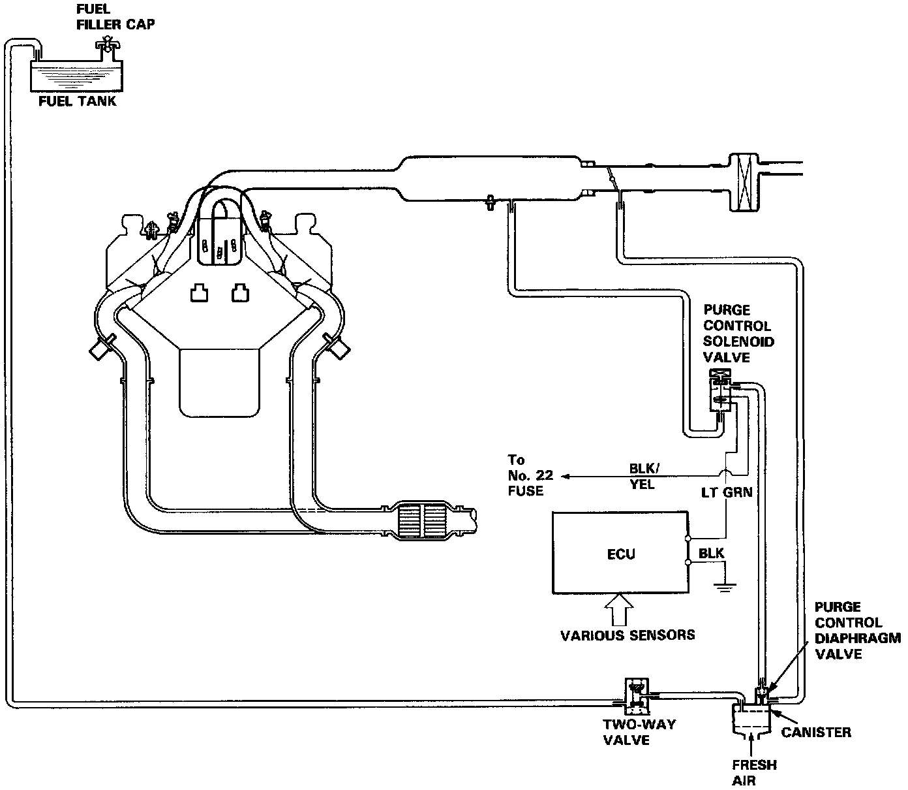
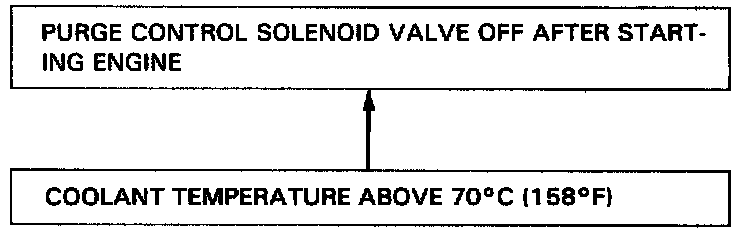

Evaporative Emissions System: Description and Operation

Description
The evaporative controls are designed to minimize the amount of fuel vapor escaping to the atmosphere. The system consists of the following Components:

A. Charcoal Canister
A canister for the temporary storage of fuel vapor until the fuel vapor can be purged from the canister into the engine and burned.
B. Vapor Purge Control System
Canister purging is accomplished by drawing fresh air through the canister and into a port on the throttle body. The purging vacuum is controlled by the purge control diaphragm valve and the purge control solenoid valve.
C. Fuel Tank Vapor Control System
When fuel vapor pressure in the fuel tank is higher than the set value of the two-way valve, the valve opens and regulates the flow of fuel vapor to the canister.